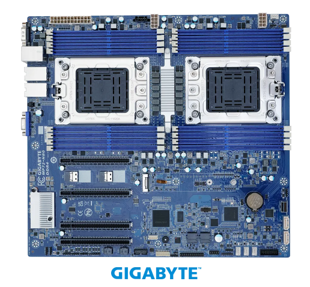

Date of Issued :2022/09/01
Subject : GIGABYTE製Ampere Altra Armプロセッサ対応のサーバーボード製品MP72-HB0のご紹介
Message Contents :
弊社ではお客様のお役に立つ最新情報、主にサーバ関係、組み込み向けマザーボードや通信モジュール等技術情報を、タイムリーに提供させていただくために、メールマガジンを定期的に発信してまいります。
皆様のご意見やご感想などをお聞かせていただければ幸いです。
Ampere の Altra® プロセッサ ファミリは、予測可能なパフォーマンス、高いスケーラビリティ、および電力効率を提供するように設計されています。 これらすべての指標における Ampere のリーダーシップは、クラウド サービス プロバイダーに卓越した結果をもたらし、TCO を削減します。

MP72-HB0 (rev. 1.0) は、CPUをDual搭載可能とし128コアまでサポートしているE-ATXのマザーボードです。メモリは8ch最大4TBのRDIMM/LRDIMMに対応します。 TDP250W